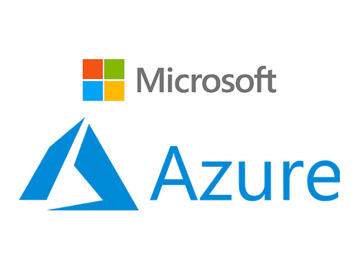
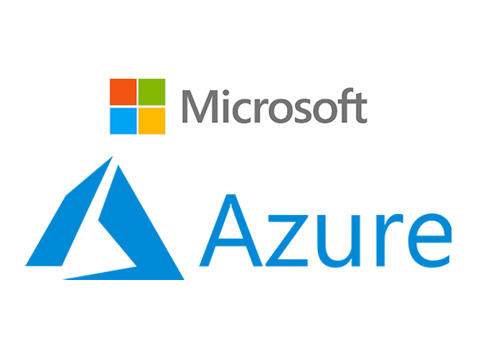

3h00 | FORMATION

3h00 | FORMATION

18 novembre 2019
Durée : 3h00
Azure 101 - Novembre 2019 - https://azure.microsoft.com/en-us/free/students
Présenté par :
Cette formation à abordé plusieurs aspects :
J'ai trouvé cette formation particulièrement pertinente dans le cadre de nos études.
En effet, nos études étant dirigé en partie sur l'environnement réseau et ayant un cours de sécurité réseau, il va de soi que la présentation et la formation sur ce type de plateforme est idéal.
Je regrette juste que nos cours n'aient pas intégré certains aspects lié aux plateformes de Cloud Computing de façon plus conséquente.
Cette formation m'a permis de mieux visualiser l'intérêt d'un environnement Cloud au niveau recherche et développement.
Elle m'a également rappelé mon job étudiant durant l'été 2018 où j'ai été Formateur Microsoft Cloud Solutions pour Tech Data & Microsoft.
Dans le cadre de ce job étudiant, j'ai été rapidement formé sur les bases de Microsoft Azure et plus particulièrement formé sur Microsoft 365 ainsi que son module Enterprise Mobility + Security.
Microsoft Azure est un service de Cloud Computing très performant.
Il permet de profiter de toutes les possibilités des environnements virtuels, avec une puissance de calcul très fortement accru par rapport à ce qui est possible de mettre en place sans avoir de coûts exhorbitants.
De plus, l'environnement est très complet et variés. Il existe plus de 200 produits différents disséminés parmis les principales catégories :
Le Cloud Computing permet d'accroître la rentabilité, il est évolutif, élastique, actuel, fiable et sécurisé.
Il s'agit de code qu'on va rendre disponible en ligne.
Pas besoin d'écrire une API car il est accessible via différentes méthodes : HTTP, Timer, CosmosDB, Blob, Queue, EventGrid, EventHub, ServiceBusQueue, ServiceBusTopic